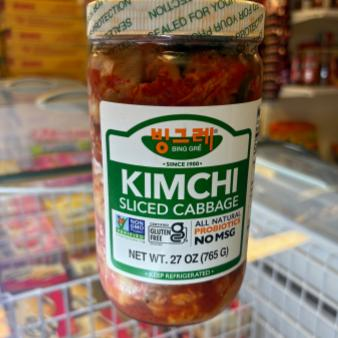
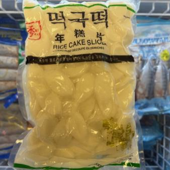
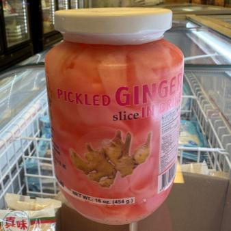
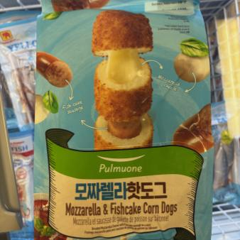
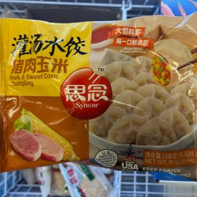

<meta name="keywords" content="Asian food, Asian products, Asian grocery, Asian ingredients, products, groceries, ingredients, snacks, sauces">
<meta name="description" content="Browse popular Asian grocery items at Hong Kong Supermarket in Winterville, NC — from fresh vegetables to imported snacks and pantry staples.">

<section class="products">
    <p class="section-eyebrow"> In the aisles </p>
    <h2> Popular Products </h2>
    <div class="product-group">
        <div class="product">
            
            <p> Sliced Rice Cake </p>
        </div>
        <div class="product">
            
            <p> Lemon Ice Cream </p>
        </div>
        <div class="product">
            
            <p> Spicy Carbonara Chicken Ramen </p>
        </div>
        <div class="product">
            
            <p> Kimchi - Fermented Sliced Cabbage </p>
        </div>
        <div class="product">
            
            <p> Oval Sliced Rice Cake </p>
        </div>
        <div class="product">
            
            <p> Pickled Ginger in Brine </p>
        </div>
        <div class="product">
            
            <p> Bihon Rice Noodles </p>
        </div>
        <div class="product">
            
            <p> Mozzarella & Fishcake Corn Dogs </p>
        </div>
        <div class="product">
            
            <p> Pork & Sweet Corn Dumplings </p>
        </div>
    </div>
    <h2 class="more"> And More! </h2>
</section>

<style>

    .products {
        padding: 3rem 2rem;
        text-align: center;
        margin-bottom: 2px;
    }

    .section-eyebrow {
        font-family: var(--font-mono);
        text-transform: uppercase;
        letter-spacing: 0.14em;
        font-size: 12px;
        font-weight: 600;
        color: var(--jade);
        margin: 0 0 8px;
    }

    .products h2 {
        font-size: 2.4rem;
        margin-bottom: 2rem;
    }

    .products h2.more {
        margin-top: 2.5rem;
        margin-bottom: 0;
    }

    .product-group {
        display: grid;
        grid-template-columns: repeat(3, 1fr);
        gap: 2rem;
        justify-items: center;
    }

    .product {
        position: relative;
        background-color: var(--white);
        border: 1px solid rgba(35, 31, 26, 0.1);
        border-radius: 10px;
        padding: 1rem;
        max-width: 370px;
        width: 100%;
        transition: transform 0.3s ease;
    }

    .product:hover {
        transform: scale(1.03);
    }

    .product img {
        width: 100%;
        height: 338px;
        max-width: 338px;
        object-fit: cover;
        border-radius: 6px;
    }

    .product p {
        margin: 0.75rem 0 0.25rem;
        color: var(--ink);
        font-weight: 600;
    }

    /* Responsive: 2 columns on medium, 1 on small screens */
    @media screen and (max-width: 1068px) {
        .product-group {
            grid-template-columns: repeat(2, 1fr);
        }

        /* Center the last item when odd count on medium screen causes wrap */
        .product-group .product:nth-last-child(1):nth-child(odd) {
            grid-column: 1 / -1;
            justify-self: center;
        }
    }

    @media screen and (max-width: 868px) {
        .product-group {
            grid-template-columns: 1fr;
        }

        .products {
            padding: 2.5rem 1.25rem;
        }
    }

</style>